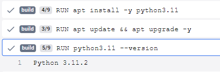

docker commit 93afb54049db jenkins:2.440.3-1
(the recommended approach is to update your dockerfile with everything
required
as that ensured full reproducibility)
Dockerfiles
Tips, Tricks, usage, and definitions regarding dockerfiles.
Common commands:
FROM
Specifies the base image to start with with an optional tag.
Images I use often:
Image Name
Purpose
Where Employed
node
Running Node.js applications
nehsa.net Angular app, React apps
sdk:8.0
.NET Core applications
Kestrel web servers and APIs
python
Python applications
NehsaMUD
golang
Go applications
Weather microservice, Web scraper microservice
EXPOSE
Exposes a port to the host machine. EXPOSE 80 443
would expose ports 80 and 443.
WORKDIR
Sets the working directory for the container. WORKDIR
/app would set the working directory to /app.
COPY
Copies files from the host machine to the container. COPY
package.json . would copy the package.json file from the host
machine to the container to the current directory (where set by WORKDIR). To
copy a directory, use COPY . . to copy the current
directory (the full app) or COPY
/app . to copy the /app directory.
RUN
Runs a command in the container. RUN npm install
would run the npm install command.
CMD
Specifies the command to run when the container starts.
e.g.
To start a Node.js app: CMD
node index.js
To start a .NET Core app: CMD dotnet
run
ENTRYPOINT
Specifies the command to run when the container starts. This is similar to CMD
but can't be overridden by the command line. It's useful for setting a default
command that can be overridden by CMD.
Example: ENTRYPOINT
["dotnet", "run"] with CMD
["--urls", "http://<ip>:5000"] would start the app with
a default URL of http://<ip>:5000.
ENV
Set environment variables. ENV
NODE_ENV=production would set the NODE_ENV variable to
production.
ARG
Set build-time variables. ARG
NODE_ENV=production would set the NODE_ENV variable to
production. ARG is different from ENV in that it's only available during the
build process, not when the container is running.
USER
Set the user that the container runs as. USER
node would run the container as the node user.
VOLUME
Mount a volume from the host machine to the container. VOLUME
/app would mount the /app directory from the host machine to
the container.
HEALTHCHECK
Specifies a command to run to check the health of the container.
HEALTHCHECK
CMD curl --fail http://localhost:80/ || exit 1 would check the
health of the container by making a request to http://localhost:80.
ONBUILD
Specifies a command to run when the image is used as a base image. This is
useful for setting up common configurations that are shared across multiple
images.
Multi-stage DockerfilesIt can be useful to use a multi-stage Dockerfile to keep
the size of the final image small and minimize the attack surface. A multi-stage works
by first building the application in a temporary container and then copying the built
application to a new container that only contains the runtime dependencies. This allows
you to keep the final image small while still having all the necessary dependencies to
run the application.
Example:
# Build stage
FROM node:21.6.1-slim AS build arrow_back // Label the stage as "build"
WORKDIR /app
COPY package.json .
RUN npm install arrow_back // Install dependencies required to build the application
COPY . .
RUN npm run build
# Production stage
FROM node:21.6.1-slim
WORKDIR /app
COPY --from=build /app/dist . arrow_back // The juicy bit. Copy the built application from the build stage
CMD node index.js
Dockerfiles Vs. Docker ComposeProjects will often after either a dockerfile, a
docker-compose.yml, or both.
dockerfile
The dockerfile is used to build the image.
docker-compose.yml
Whereas the Dockerfile starts the container, docker-compose is about running
them. While the docker-compose.yml file can also be used to build the image, it
is more common to use a docker file for this purpose.
An advantage of using a docker-compose.yml file is that it allows you to
orchestrate running multiple containers, including defining the network
configuration between them. It's also helpful in defining environment variables
and other configuration options shared across multiple containers.
e.g. 418 would find this image:
Common commands:
Images I use often:
e.g.
Example:
Example:
An advantage of using a docker-compose.yml file is that it allows you to orchestrate running multiple containers, including defining the network configuration between them. It's also helpful in defining environment variables and other configuration options shared across multiple containers.
docker push localhost:5000/<tagname>
# Update package lists RUN apt update && \ apt upgrade -y # Install required packages RUN apt install -y python3.11 # Check the installed version of Python RUN python3.11 --versionThis can be verified by checking build log and confirmed we get a Python version 3.11 printed: 
FROM node:21.6.1-slim // The base image to start with EXPOSE 80 443 WORKDIR /app COPY package.json . RUN npm install COPY . . CMD node index.jsname: nehsanet version: "3.8" services: nehsanet: build: . ports: - "0.0.0.0:4200:4200" - "0.0.0.0:49153:49153" image: "nehsanet-image" volumes: - "/app/node_modules" - ".:/app" command: bash -c "npm install -D @playwright/test@latest --legacy-peer-deps; npx playwright install --with-deps msedge firefox webkit; npm start -- --host 0.0.0.0" volumes: node_modules: app: